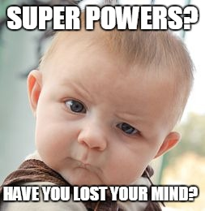
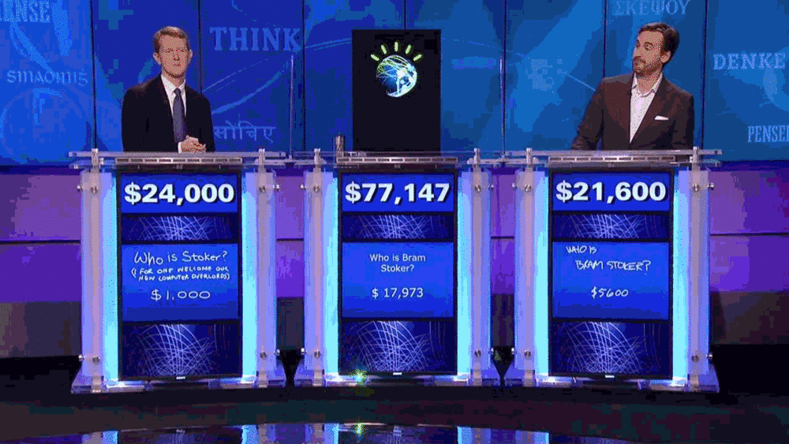
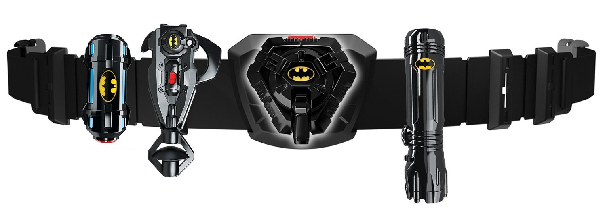
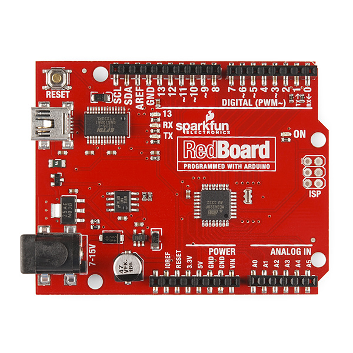
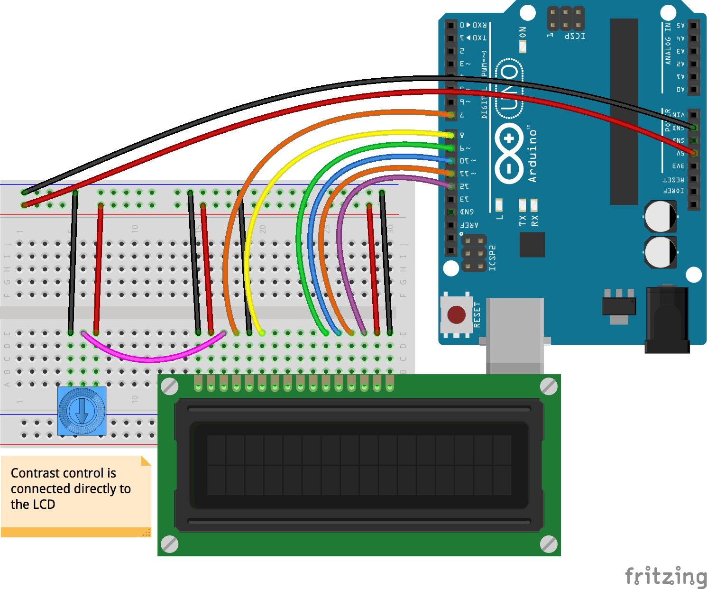

Coding is a
Super Power!
Mike Bockus
What Are We Talking About?
- How is coding a super power?
- Examples of coding glory
- Super Speed
- Insane Intelligence
- Amazing Automation
- CS IS EVERYTHING
- Johnny-Five Alive
How is coding a super power?
Programming gives us the ability to complete tasks with Super Speed.
Software that enables machines to perceive their environment and make decisions with Insane Intelligence.
With Amazing Automation, we can use programming to automate and complete tasks without human intervention.
I know what you're thinking...
SUPER SPEED!
IBM Watson
- The software was written in numerous languages
- According to IBM, "more than 100 different techniques are used to analyze natural language, identify sources, find and generate hypotheses, find and score evidence, and merge and rank hypotheses."
- Watson had access to 200 million pages of structured and unstructured content consuming four terabytes of disk storage including the full text of Wikipedia
- Watson can process 500 gigabytes, the equivalent of a million books, per second.
“That machine zeroes in on key words in a clue, then combs its memory (in Watson's case, a 15-terabyte data bank of human knowledge) for clusters of associations with those words. It rigorously checks the top hits against all the contextual information it can muster: the category name; the kind of answer being sought; the time, place, and gender hinted at in the clue; and so on. And when it feels "sure" enough, it decides to buzz. This is all an instant, intuitive process for a human Jeopardy! player, but I felt convinced that under the hood my brain was doing more or less the same thing.” -Ken Jennings

Actual Super Powers!
- Identifying treatment plans for cancer patients
- Weather forecasting
- Chatterbot
- Education
Insane Intelligence!
Driverless Cars
- Use of multiple sensors to learn about the environment
- Communicate with other cars to gain additional knowledge
- No accidents caused by those pesky human drivers
What about when the robots take over?
Using AI to our advantage!
- Game playing
- Language Processing
- User Behavior Analytics
- Recognition
Amazing Automation!
Home Automation
- Add internet capabilities to the things we interact with on a daily basis
- Use AI and programming to automate tasks that have previously been manual
- Spend more time doing the things you love while the robots handle the boring stuff
Automation at it's best!
>Using automation to our advantage!
- Marketing
- Social Media
- It's all about time savings
Alright, I'm convinced. Coding is a super power. How can I apply that to my problems?
I have good news...
CS Is Everything!
It's time to add accessories to your super hero utility belt
Johnny-Five Alive!
- What is johnny-five?
- How do I use it
- Prove that it works
Johnny-Five is the JavaScript & IOT platform.
We're going to use johnny-five to program an Arduino
Led Blink

Led Blink Program
var five = require("johnny-five");
var board = new five.Board();
board.on("ready", function() {
// Create a standard `led` component instance
var led = new five.Led(13);
// "blink" the led in 500ms
// on-off phase periods
led.blink(500);
});
LCD Control
LCD Program
var five = require("johnny-five"),
board, lcd;
board = new five.Board();
board.on("ready", function() {
lcd = new five.LCD({
// LCD pin name RS EN DB4 DB5 DB6 DB7
// Arduino pin # 7 8 9 10 11 12
pins: [7, 8, 9, 10, 11, 12],
backlight: 6,
rows: 2,
cols: 20
});
// Tell the LCD you will use these characters:
lcd.useChar("heart");
// Line 1: Hi rmurphey & hgstrp!
lcd.clear().print("I :heart: johnny-five");
lcd.cursor(1, 0);
lcd.print("Go JETS!");
this.repl.inject({
lcd: lcd
});
});